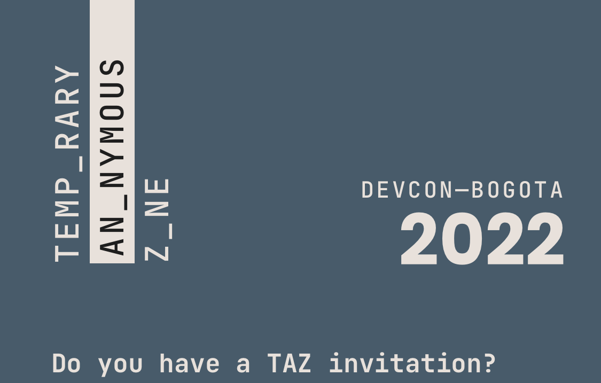
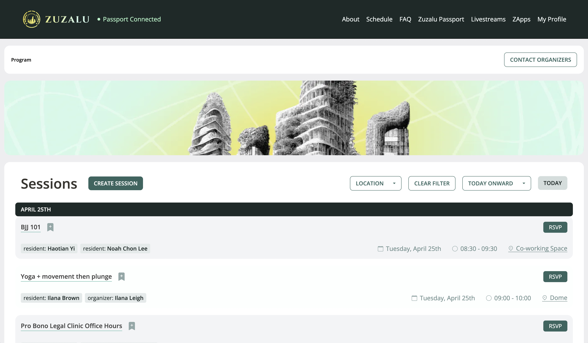
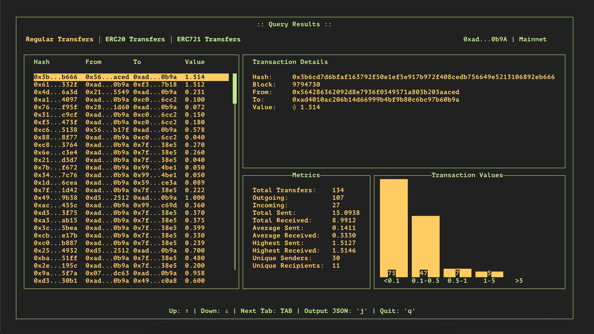
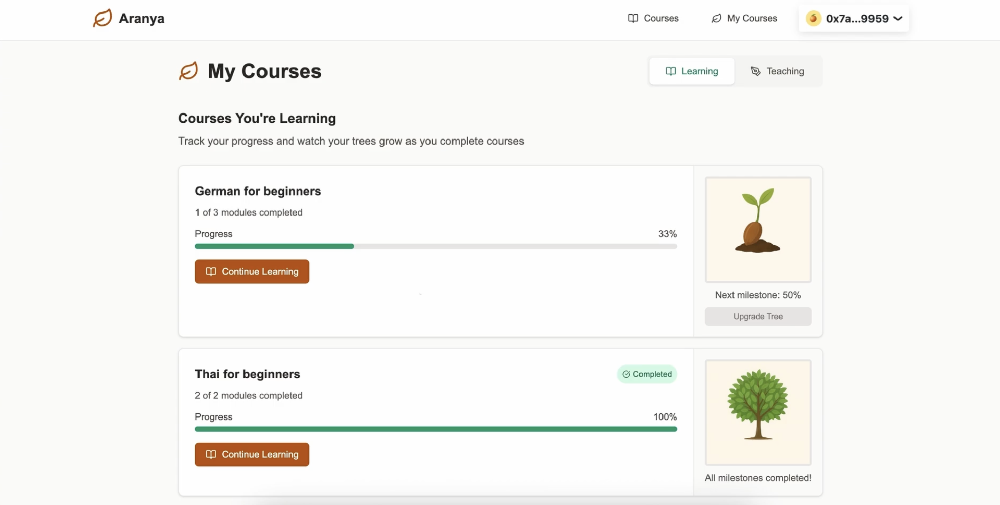

ABOUT
Hi, I'm Falco, a software developer from The Netherlands. Growing up playing video games in
the 90's and 00's sparked an early fascination with computers and the rise of the internet.
After studying Psychology and earning my degree, I eventually found my way into programming through a coding
bootcamp, which led to my first developer role at IBM. I enjoy working across the stack, though my current
focus is on backend development.
I'm particularly interested in technology that helps people regain control over their personal lives and
enables communities to organize in more open and transparent ways. Other topics that excite me include mental
health, public goods, and education.
Since 2022 I've been based in Thailand where I live with my wife and help running a meditation center. In my
free
time I enjoy reading, eating massaman, listening to music and occasionally dreaming about developing my own
game.
EXPERIENCE
2022 - 2026
Developer
•
Freelance
•
Remote
I collaborated on open-source projects for several protocols and foundations across the Ethereum ecosystem. In addition to frontend and backend development, I worked with advanced cryptographic methods like zero-knowledge proofs and developed smart contracts for the Ethereum Virtual Machine.
Solidity
Rust
Cairo
HTML
CSS
SQL
NoSQL
JavaScript
TypeScript
React
NextJS
2019 - 2020
Developer
•
IBM
•
Groningen
I worked on several projects involving different technology stacks, most notably developing a Java application for the Dutch government organization Rijkswaterstaat that facilitates the management and tracking of asbestos removal operations.
Java
TypeScript
Angular
HTML
CSS
SQL
2017 - 2018
Co-Founder
•
Geluksontdekkers
•
Groningen
I co-founded a company with two colleagues from the field of psychology. Together, we researched and developed measurement tools designed to assess and enhance happiness within organizations. Our work focused on areas such as stress management, leadership, and personal growth.
PROJECTS
Temporary Anonymous Zone (TAZ) was a mobile app for Devcon attendees in Bogotá, Colombia that used Semaphore zero-knowledge proofs to enable anonymous interaction among verified conference participants. Users could leave feedback, ask questions, and collaborate on drawings while maintaining full anonymity.

JavaScript
TypeScript
HTML
CSS
React
NextJS
Solidity
The Zuzalu App was a web platform created for the original two-month Zuzalu pop-up city in Montenegro. It enabled participants to sign in using a Zuzalu Passport leveraging zero-knowledge proofs from 0xPARC. The application allowed users to explore the event schedule, organize sessions, and coordinate community activities.

TypeScript
HTML
CSS
React
NextJS
HyperTui is a tool for viewing on-chain data and analytics through a terminal user interface (TUI). It runs entirely in the terminal and is operated via keyboard controls. The tool uses HyperSync from Envio to query data from Ethereum and other EVM-compatible chains, presenting the results in a dashboard-style interface. Users can export query results as JSON files.

Rust
Ratatui
Aranya is a concept course platform that issues on-chain credentials for learners and teachers in the form of trees that grow as course milestones are reached. Built on the Flare blockchain, it uses the Flare Data Connector to verify off-chain course activity and reflect progress on-chain. As learners complete modules and teachers reach milestones, their trees evolve to represent their achievements.

Rust
Solidity
HTML
CSS
TypeScript
React
NextJS